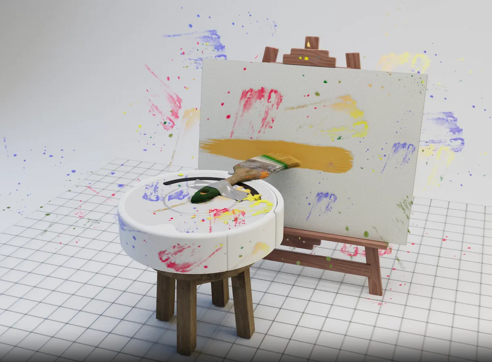

Re:design — A Computational Design Workshop for Humans and AI
Deconstructing the shift from chatbot conversationalism to semantic rendering, real-time latent manipulation, spatial world models, and high-agency creative curation.
01 The Philosophical Premise: Is the Designer Present?
In 2010, artist Marina Abramović sat silently in the atrium of the Museum of Modern Art for 736 hours and 30 minutes, inviting museum visitors to sit opposite her in absolute silence. The Artist Is Present was not an exhibition of passive artifacts; it was a pure inquiry into presence, relational vulnerability, and intentionality. The provocation that gripped the art world then now haunts computational design today: Is performance art still art when stripped of physical fabrication? Is generative design still design when machines manufacture the output in milliseconds?

Abramović's durational performance at MoMA examined the irreplaceable tension of human presence. In the age of generative models, we must ask whether the designer remains present or has abdicated agency to probabilistic autocomplete.
As generative AI systems flood the creative landscape with frictionless permutations, the danger is not that machines lack imagination—it is that designers become spectator consumers in their own creative process. When a single prompt yields dozens of synthetic paintings, layouts, or paragraphs, human intentionality is easily diluted into passive curation.

Ted Chiang's August 2024 cultural critique on artistic choice and artificial intelligence.

Artistic creation consists of thousands of conscious micro-choices fundamentally alien to token-prediction architectures.
This workshop is founded on the conviction that generative AI must not reduce design to conversational prompting. Rather, it must expand design into a rigorous, high-leverage computational discipline where the human designer exercises heightened intentionality, geometric grounding, and direct agency over machine substrates.
02 Pedagogical Intent: Becoming Exponentially Creative
As an ex-software engineer and 2nd-year master's researcher who built over 50 experimental AI and computational design systems over the past year, I designed this workshop to bridge the chasm between raw computer science research and expressive creative practice.
Chat bubbles are an impoverished interface for design. We build spatial, gestural, voice-driven, and direct-manipulation tools that treat models as semantic rendering engines.
Move past prompt-luck by coupling generative models with deterministic constraints: ASTs, type systems, vector mathematics, and qualitative grounded theory.
Equip participants to develop their own software extensions, custom interactive agents, and tangible interfaces that expand what human-machine symbiosis can achieve.
03 New Frontiers: Beyond the Chatbot Paradigm
To understand where interaction design is heading, we must look beyond commercial chat interfaces to what frontier research laboratories and hardware architects are constructing. Five decisive technological shifts are redefining the creative substrate.
Trend 1: LLMs from Token Generation to Semantic Rendering
The initial era of LLMs was characterized by slow, token-by-token character streaming inside isolated chat windows. Today, custom inference hardware and typed grammar engines have transformed language models into near-instantaneous semantic compilers. Models no longer merely emit prose; they render interactive UI widgets, abstract syntax trees (ASTs), and executable state machines in milliseconds.

Deterministic tensor streaming enables sub-10ms token generation, making LLM responses feel as responsive as local graphics rendering.

Giant single-chip silicon architecture eliminates memory bandwidth bottlenecks for massive interactive model execution.

Instead of unstructured natural language, systems like Jev emit strongly typed, verifiable UI schemas directly into browser runtimes, bridging AI output with deterministic frontend architectures.
Trend 2: Voice from Synthesis to Affective Enactment
Traditional Text-to-Speech (TTS) was robotic, monotonic, and unidirectional. The state of the art has transitioned to affective voice enactment—bidirectional, low-latency audio models capable of real-time interruption, dynamic prosody, vocal inflections, emotional calibration, and half/full-duplex transcription.

Sub-200ms expressive vocal synthesis with human-like breathing, hesitation, and emotional nuance.

Native audio-to-audio multimodal models that process tone, cadence, and ambient sound directly without intermediate text transcription.
In the workshop demos (e.g. Time Travel Radio), we exploit browser-native Web Speech synthesis and Web Audio DSP filters to modulate vocal age, rate, pitch, and timbre dynamically as users navigate historical eras across the 20th and 21st centuries.
Trend 3: Image from Generating Artifacts to Realtime Canvas Rendering
Diffusion models have escaped the "prompt-and-wait-30-seconds" paradigm. Through rectified flow matching and distilled architectures (such as FLUX.1, FLUX.2 Klein, and SDXL Turbo), image synthesis now occurs at interactive 30–60 FPS speeds.
 fal.ai Realtime
fal.ai Realtime

State-of-the-art 12B parameter flow-transformer models providing unprecedented typographic precision and spatial fidelity.
Sub-100ms image-to-image feedback loops transform generative models into dynamic, brush-like interactive painting instruments.
When generative latency falls below 100 milliseconds, the human mind transitions from treating the tool as an asynchronous oracle to experiencing it as a direct physical prosthetic—enabling fluid semantic sculpting.
Trend 4: Video Generation & Interactive Spatial World Models
Beyond 2D pixel grids lies the frontier of Spatial Intelligence. Instead of generating flat video clips, foundational research labs are training models to understand 3D geometry, object permanence, camera kinematics, and physical interaction.

Founded by Fei-Fei Li, World Labs develops Large World Models (LWMs) capable of generating persistent, physically-navigable 3D environments.

Open-source multimodal world simulation platform modeling dynamic physics, object interactions, and 3D scenes.
Trend 5: Computer Vision Goes Local and Real-Time
By moving inference directly into the browser via WebAssembly (WASM), WebGPU, and Google MediaPipe, spatial tracking no longer depends on cloud servers. Designers can now build high-frequency gestural interfaces that track 21 3D hand landmarks at 60 FPS locally with zero network latency and complete user privacy.
In our hands-on demo (demos/hand-tracking/hand-tracking.html), MediaPipe's client-side neural network maps pinching, pointing, and palm orientation to parameter vectors, allowing users to physically sculpt generative prompts in mid-air.
04 Emerging Disciplines: More Than Human & Spatial Systems
As AI entities gain agency, interaction design is forced to mature beyond traditional screen-bound usability rubrics. Two critical frontiers define this emerging discipline:
More Than Human: Relational Design & Entity Welfare
How should human society relate to non-human cognitive systems? The industry is engaged in a profound debate between human-centric utilitarianism and relational entity ethics.

Focuses on human flourishing, ethical alignment, user control, and preventing algorithmic deception.

Pioneering philosophical and empirical frameworks evaluating whether advanced AI systems can possess morally relevant interests.
Spatial, Embodied, and Physical Systems
Modern multimodal spatial assistants, such as OpenAI's Astra, are the intellectual descendants of seminal spatial computing research conducted over four decades ago at MIT.

Universal multimodal assistant observing ambient physical environments through real-time video feed.

Seminal demonstration at the MIT Architecture Machine Group uniting deictic gesture pointing with natural voice commands.
05 Direct Agency: The Shneiderman vs. Maes Debate Reconciled
At the 1997 ACM Conference on Human Factors in Computing Systems (CHI), computer scientists Ben Shneiderman and Pattie Maes engaged in one of the most foundational debates in interface history: Direct Manipulation versus Autonomous Interface Agents.

The Stance: Users demand mastery, predictability, visual feedback, and direct tactile control over system objects. Autonomous agents introduce opacity, unpredictability, and loss of human agency.

The Stance: As system complexity explodes, direct manipulation becomes a tedious bottleneck. Users require intelligent, autonomous agents that learn user habits, anticipate intent, and execute high-level tasks.
In our computational design framework, we reconcile Shneiderman and Maes. We reject opaque autonomous black boxes (Maes taken to extreme) and tedious manual micro-drawing (Shneiderman without AI). Instead, we build Direct Agency Interfaces: the AI agent supplies infinite generative substrate and semantic understanding, while the human designer wields high-bandwidth continuous controls (gestures, sliders, rubrics, spatial anchors) to sculpt that latent substrate with total authorial precision.
06 New (Old) Ways to Design: The Generative Triad
How do we structure a rigorous creative workflow with generative systems? We anchor computational design in a time-tested formula:
Phase 1: Generate — Why Quantity Unlocks Quality
In their classic 1993 book Art & Fear, David Bayles and Ted Orland recount the legendary ceramics grading experiment: a ceramics teacher divided the class into two halves. Half the students were graded strictly on the weight of clay produced (quantity), while the other half were graded on a single perfect pot (quality). When grading day arrived, a curious fact emerged: the works of highest quality were all produced by the group being graded for quantity. While the quantity group churned out pots and learned from every mistake, the quality group sat theorizing and produced little more than grand plans and mediocre clay.

The seminal text on creative resistance and the empirical supremacy of volume over perfectionism.

Combinatorial design matrix forcing algorithmic generation across orthogonal trait dimensions (hair, eyewear, accessories).
Six Practical Generation Techniques:
Force models to cross orthogonal parameter vectors (e.g. style, era, constraint, medium) to prevent mode collapse.
Constrain LLM outputs to parametric bounding boxes, void shapes, or strict 3D scene graphs rather than raw text.
Feed the system authentic, lived-experience data: raw audio logs, messy sketchbook transcriptions, and personal notes.
Instruct the AI to interview you as an inquisitive journalist to extract latent intentions before generating solutions.
Anchor idea generation in academic literature reviews to navigate away from derivative clichés and towards original frontiers.
Spawn multiple simulated user personas with conflicting goals to stress-test concepts in simulated environments.
Phase 2: Evaluate — Divergent & Convergent Thinking
Where did the iconic Double Diamond innovation model originate? In the 1950s, psychologist J.P. Guilford and advertising pioneer Alex Osborn (author of the 1953 classic Applied Imagination) introduced the cognitive framework of Divergent Thinking (broad, non-judgmental option generation) followed by Convergent Thinking (critical analytical evaluation and sorting). This was later formalized by the UK Design Council into the Double Diamond.

Foundational text establishing brainstorming and formalizing divergent versus convergent ideation cycles.

The four-phase innovation framework: Discover (diverge), Define (converge), Develop (diverge), Deliver (converge).
Evaluation Methodologies in AI Design:
- Quantification & Programmatic Rubrics: Scoring generated variants against multi-attribute matrices (feasibility, novelty, semantic alignment, user friction).
- Data Visualization & Vector Distance: Projecting candidate embeddings onto 2D UMAP/t-SNE maps to identify clusters, outliers, and unexplored white space.
- Virtual Prototyping: Building interactive, throwaway Web micro-apps (e.g. Time Travel Radio) to evaluate auditory and tactile ergonomics before writing production code.
Phase 3: Curate — Theory-Making & The Ethics of Care
The word Curate originates from the Latin curare, meaning "to care for." Curation is not passive filtering; it is an act of deep synthesis, intellectual stewardship, and framework formulation.

Sociological methodology for deriving theories inductively from qualitative evidence—the theoretical foundation for organizing unstructured AI outputs into coherent design frameworks.
By applying Grounded Theory methods—open coding, axial clustering, and selective integration—designers synthesize hundreds of raw generative fragments into durable design systems and grounded conceptual theories.
07 Hands-On Studio Practice: Pod Challenge
Working in groups of 3, design a radically new interaction modality for communicating with AI. You are strictly forbidden from building a standard conversational chat bubble interface.
Interview your pod members. Extract personal, tangible design problems from your daily workflow. Avoid generic AI use cases.
Perform rapid annotated bibliography research. Find at least two prior academic interaction paradigms (e.g. Bolt's Put-That-There).
Generate 30+ concept permutations across sensory modalities. Quantify and rank them using a shared design rubric.
Build a functional browser prototype using Web Speech, MediaPipe hand tracking, or real-time Canvas, accompanied by a public launch webpage.